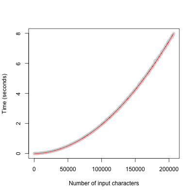

class: center, middle # R Programming - Data Types, Preallocation, Concatenation, Vectorization ### Duncan Temple Lang <div style="clear: both"/> <!-- <hr width="50%"/> --> --- # Questions on Assignment 5 + Your questions --- # R Fundamentals ## Vector, List, data.frame + vector/list - ordered collection of elements <pre> ________________________________ | x1 | x2 | x3 | x4 | x5 | ... | ________________________________ </pre> + indexed by position + can have names on the elements <pre> __________________________________ | a | b | cd | ef | xyz | .... __________________________________ __________________________________ | x1 | x2 | x3 | x4 | x5 | ... | __________________________________ </pre> --- # Vectors + homogeneous types for each element + when we combine vectors of different types, R coerces to "lowest" common type + logical `<` integer `<` numeric `<` character `<` complex ```r c(TRUE, FALSE, TRUE) # logical c(TRUE, 1L) # integer c(TRUE, 1L, 3.1415) # numeric c(TRUE, 1L, 3.1415, "text") # character ``` --- # List + list - vector - ordered collection + but allows each element to have a different type ``` c(1, "text") # a character vector with two elements, "1" and "text" list(1, "text") # list with two elements of class numeric and character ``` ``` c(1:2, 3:10) # an integer vector list(1:2, 3:10) # a list with 2 elements each of length 2 and 8 ``` --- # `[` and `[[` --- # Subsetting 1. index/position 1. negative index/position - omit 1. names of elements 1. logical 1. --- # *apply() + lapply() - always returns a list. + sapply() - simplify after lapply(). + vapply() - vector lapply() - specify expected type of each element. + tapply() - table lapply() - group by. Simplfies. + mapply() - SIMPLIFY = TRUE/FALSE --- # data.frame + list of columns + each column has to have the same number of elements + 2-D structure - rows (observations) and columns (variables) + each column can have a different type + logical, integer, numeric, character, + factor ? + list + Column - list with each element a matrix of different dimension ```r d = data.frame(a = 2*1:10, y = rnorm(10)) d$matrix = lapply(d$a, function(n) matrix(rnorm(n*n), n, n)) sapply(d, class) sapply(d$matrix, class) sapply(d$matrix, nrow) ``` --- # Associative Arrays + named elements - ignore index/position ``` x = list() x$a = 1 x$xyz = "text" ``` + hash tables - fast named lookups + environments + not important for almost all work. --- # Making Code Better/Efficient #### [riverdist package](https://github.com/mbtyers/riverdist) + making faster in different ways + debugging to access values + whoconnected() function + removemicrosegs() --- # `removemicrosegs()` Function ### Preallocation + Consider the first 5 lines of the removemicrosegs() function ```r displacement <- NA for(i in 1:length(rivers$lines)) { dim.i <- dim(rivers$lines[[i]])[1] displacement[i] <- pdist(rivers$lines[[i]][1,], rivers$lines[[i]][dim.i,]) } ``` + Can think about the code "statically" + Or debug and watch computations ``` debug(removemicrosegs) rivers = readRDS("rivers.rds") z = removemicrosegs(rivers) ``` --- # Don't Repeat Yourself - DRY + 4 references to `rivers$lines[[i]]` + repetition of same computation + Simplify ```r displacement <- numeric() # or 0 to make numeric() for(i in 1:length(rivers$lines)) { r = rivers$lines[[i]] displacement[i] <- pdist(r[1,], r[ nrow(r), ]) } ``` --- # Preallocation - `removemicrosegs()` + Appending to displacement vector one element at a time. + displacement is a logical vector of length 1 + `displacement[i] <- ...` + inserting into position 1, 2, 3, .... + each time, R has to grow displacement by one element. + potentially has to + create new vector with n + 1 elements + copy all existing n elements to new vector + insert new element into n + 1 + clean up old vector --- # Simpler & much more efficient code ```r displacement <- sapply(rivers$lines, function(r) pdist(r[1,], r[nrow(r),])) ``` --- # Redundant/Unnecessary Computations ### `whoconnected()` ```r whoconnected <- function(seg,rivers) { connections1 <- !is.na(rivers$connections) connected <- which(connections1[seg,]) return(connected) } ``` + rivers$connections is a matrix + is.na(rivers$connections) returns a matrix of TRUE/FALSE values. + same dimensions as rivers$connections. + vectorized function + `connections1[seg, ]` - subset a row of result + which() gives integer vector of indices --- # Simplify + No need to assign last computation to variable and then explicitly `return()` it ```r whoconnected <- function(seg, rivers) { connections1 <- !is.na(rivers$connections) which(connections1[seg,]) } ``` --- # Significant Improvement + Real issue is + why compute the NA values of all elements in matrix AND then subset row. + Instead, change the order + subset the row + compute the non-NA indices ``` tmp = rivers$connections[seg, ] which(!is.na(tmp)) ``` + Avoids very large number of redundant computations - each call! + Huge speed-up. --- # For loops versus **Vectorization** + `removemicrosegs()` ```r for(j in problems) { connectedto <- whoconnected(seg = j, rivers = rivers) for(jj in connectedto) { for(jjj in connectedto) { if(jj != jjj && !any(whoconnected( jj, rivers) == jjj)) { rivers <- connectsegs(connect = jj, connectto = jjj, rivers = rivers, calcconnections = FALSE) } } } } ``` + rivers$connnections - 7784 x 7784 matrix + number of iterations 471,637,666,304 + 4 x 10<sup>11</sup> `>` ~ 400 billion --- # Improvements 1. `!any(whoconnected(jj, rivers) == jjj)` + really is `is.na(rivers$connections[jj, jjj])` + many redundant computations --- # Vectorize & Remove nested loops - jj and jjj 1. For each pair of indices in `connectedto` (jj and jjj) + see if `rivers$connections[jj, jjj]` is `NA` + one pair at a time 1. Vectorize - compute `rivers$connections[ IndexMatrix2D ]` + all pairs in one call + IndexMatrix2D needs to be 2 column matrix `[ jj, jjj]` 1. Create IndexMatrix2D ```r n = length(connectedto) gr = cbind(rep(connectedto, n), rep(connectedto, each = n)) # drop the rows where the two values are the same. gr = gr[ - (((1:n) -1 )*n + 1:n), ] ``` 1. Compute rows of pairs of indices not connected ```r w = is.na(rivers$connections[ gr ]) gr[w,] ``` --- # Alternative Way to Create 2-D Matrix ```r gr = as.matrix(expand.grid(connectedto, connectedto)) ``` --- # Assignment 5 + Potentially long run times. + Start early. + Don't recompute timings each time you knit. + Compute the timings in a script + make reproducible. + saveRDS() timings + In .Rmd file, readRDS() and use from there. + Make certain timings are correct and up-to-date. + i.e., synchronized with actual code. --- # Preallocation Look at the code for URLdecode + Where is it concatenating to a vector? + How can we avoid doing this? ```r function (URL) { x <- charToRaw(URL) pc <- charToRaw("%") out <- raw(0L) i <- 1L while (i <= length(x)) { if (x[i] != pc) { out <- c(out, x[i]) i <- i + 1L } else { y <- as.integer(x[i + 1L:2L]) y[y > 96L] <- y[y > 96L] - 32L y[y > 57L] <- y[y > 57L] - 7L y <- sum((y - 48L) * c(16L, 1L)) out <- c(out, as.raw(as.character(y))) i <- i + 3L } } rawToChar(out) } ``` --- # Vectorizing + Two possible approaches 1. Totally different approach + regular expressions? 2. Or can we vectorize the existing code in URLdecode() + Avoid while() loop altogether. --- # Run Times + Generate sample URL-encoded strings + lengths ranging from 1 to 200K <ol> <li> <a href="utilsURLDecodeCompTimeFit.png" target="_blank">Run times for utils::URLdecode() 1 - 200K</a> </li> <li> <a href="utilsURLDecodeCompTimeFitExtrapolation.png" target="_blank">Run times utils::URLdecode() extrapolated to 600K</a> </li> <li> <a href="Runtimes2.png" target="_blank">Run times for 3 Implementations - 1 to 200K</a> </li> <li> <a href="Runtimes.png" target="_blank">Run times for 3 Implementations - 1 to 600K</a> </li> <li> <a href="Runtime3.png" target="_blank">Run times for Preallocated & Vector Implementations - 1 to 200K</a> </li> </ol> --- # `utils::URLdecode()` ## Computational Time + Quadratic Fit <div style="xxfloat:right"> <a href="utilsURLDecodeCompTimeFit.png" target="_blank"> </img> </a> </div> --- # Run-time `utils::URLdecode()` ## Extrapolation to 600K Input Size <a href="utilsURLDecodeCompTimeFitExtrapolation.png" target="_blank"> <img src="utilsURLDecodeCompTimeFitExtrapolation.png" width=450 height=450></img> </a> --- ## Run-times for 3 Implementations + Input size 1 - 200K <a href="Runtimes2.png" target="_blank"> <img src=Runtimes2.png width=450 height=450></img> </a> --- ## Run-times for 3 Implementations + Full range of inputs 1 - 600K <a href="Runtimes.png" target="_blank"> <img src=Runtimes.png width=450 height=450></img> </a> --- ## Run times for Preallocated & Vectorized Implementatins + Range of inuts 1 - 200K <a href="Runtime3.png" target="_blank"> <img src=Runtime3.png width=450 height=450></img> </a>